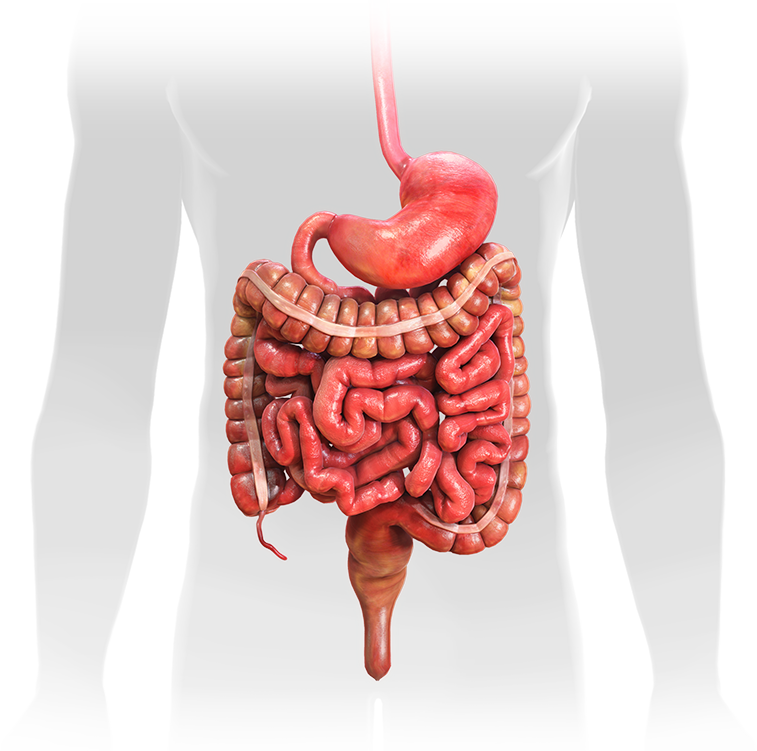

Алгоритм ведения пациентов с подозрением на желудочно-кишечное кровотечение с элементами поддержки принятия клинических решений
Пол *
Мужской
Женский
Необходимо ввести возраст.
Возраст, лет *
Бледность кожных покровов
Холодный липкий пот
Необходимо ввести значение.
АД сист., мм.рт.ст. *
Необходимо ввести значение.
Пульс, уд/мин *
Коллаптоидное состояние
Потеря сознания
Рвота "кофейной гущей"
Рвота тёмной кровью
Мелена
Гематохезия
Язвы в ЖКТ в анамнезе
ЖКК в анамнезе в верхнем отделе ЖКТ
ЖКК в анамнезе в неустановленном отделе ЖКТ
Сопутствующие заболевания в стадии суб- и декомпенсации, требующие неотложных лечебных мероприятий или непосредственно угрожающие жизни больного
Необходимо ввести значение.
Гематокрит, % *
Необходимо ввести значение.
Гемоглобин, г/л *
Необходимо ввести значение.
Эритроциты, 10^12/л *
Тест на скрытую кровь в кале "+"
Очистить
Предварительное заключение
Предварительное заключение
Рекомендация
Да
Нет
Эндоскопические признаки
Поверхностный дефект (эрозия) слизистой оболочки
Локальная атрофия ворсинок тонкой кишки
Локальные воспалительные изменения слизистой оболочки
Анастомоз ЖКТ
Задержка видеокапсулы
Нерегулярность поверхности слизистой оболочки (подозрение на наличие опухоли)
Дивертикулы кишки
Посткоагуляционный струп
Сосудистые мальформации
Стриктура кишки
Тотальная атрофия ворсинок тонкой кишки
Тотальные воспалительные изменения слизистой оболочки
Глубокий дефект (язва) слизистой оболочки
Разрыв геморроидального узла
Варикозно-расширенные вены верхних отделов ЖКТ с дефектом